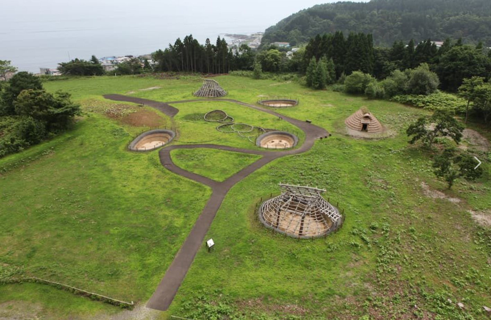
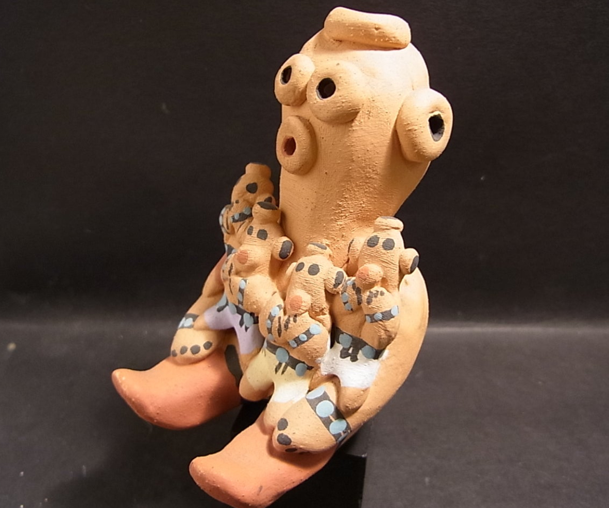
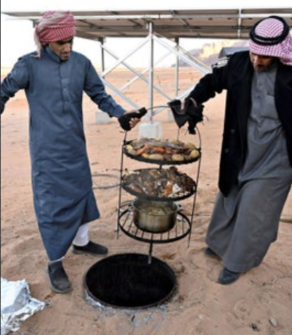
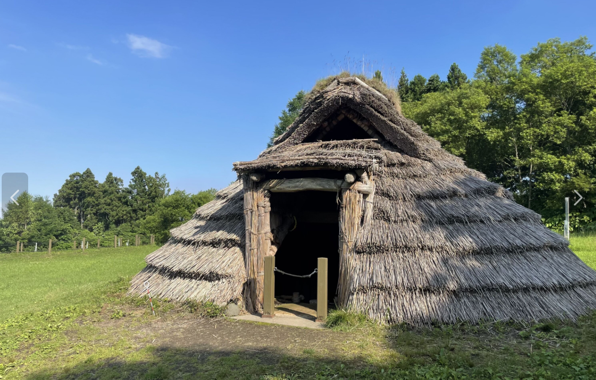
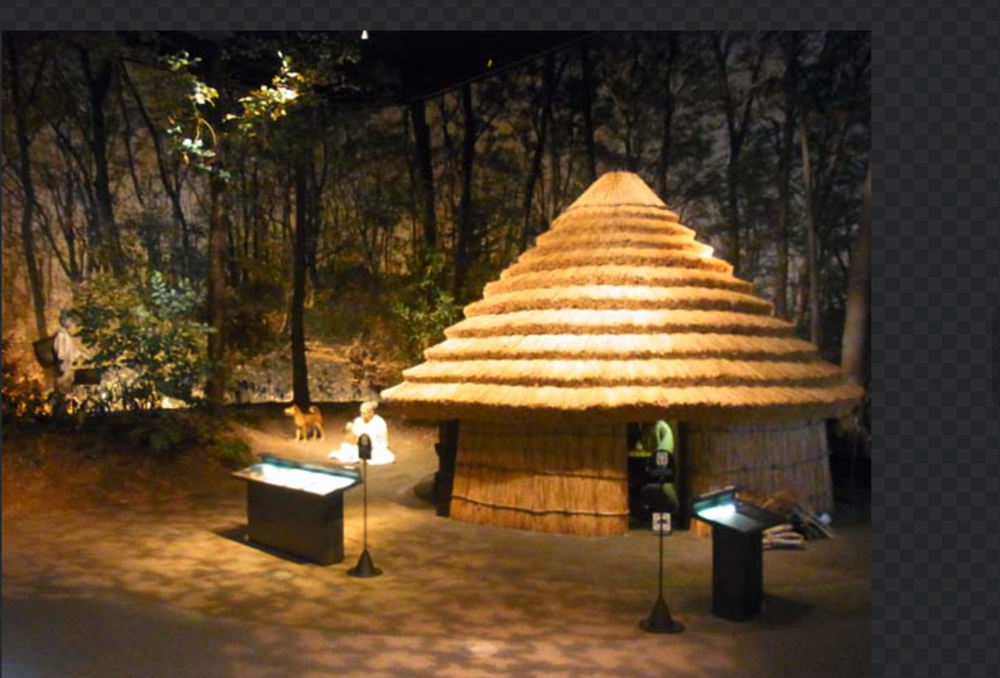

Project 03
Jomon Experience
世界遺産・縄文遺跡群を「見る場所」から「体験する場所」へ。
体験消費を広げるための仕組みとして設計します。

Why This Matters
なぜ縄文体験が必要か
函館の消費構造は飲食・土産に偏り、体験消費はほとんどありません。
世界遺産に登録された縄文遺跡群は、体験消費を広げる最大の資源なのに、
「見るだけ」の状態にとどまっています。
CHART — 7割超の観光客が体験・イベントに不参加。体験コンテンツの構造的不在を示す。
体験消費は全体の5%以下。世界遺産があるのに、体験としての商品がない。
Experience Design
体験コンテンツの設計
土偶アクセサリー制作体験
縄文の土偶や土器をモチーフにした、小さなアクセサリーを自分の手でつくる体験。
ネックレス、ブレスレット、ブローチなど、身につけて持ち帰れるコンパクトな作品を制作。
所要時間40〜60分。体験単価3,000〜5,000円。
女性が日常的に身につけたくなるデザインを意識し、
縄文の造形美を現代のアクセサリーとして再解釈する。
「世界遺産で作った、自分だけの縄文アクセサリー」という体験は、
SNS発信力が高く、体験消費と物販消費を同時に生み出す。

参考事例：アメリカ先住民族ナバホ族のジュエリー制作体験—— ターコイズやシルバーを用いた伝統的なアクセサリーづくりを観光客に提供。 自然素材と民族の造形美を身につけられる形で商品化し、 体験消費と物販を結びつけた成功例。
縄文食体験
縄文時代の食材を現代の調理で再現。栗、鮭、山菜、貝。縄文食コースとして提供。

参考事例：ヨルダンの伝統料理「ザルブ」—— 地中の石窯で肉や野菜を蒸し焼きにする料理。 縄文アースオーブンと近い調理方法であり、 古代の調理技術が現代の食体験として成立する実例。
学び・ガイド体験
専門ガイドによる遺跡ツアー。1万年の暮らしを追体験する90分プログラム。多言語対応。

夜の縄文演出
遺跡の夜間ライトアップ、プロジェクションマッピング。Night Economyとの連携で夜の集客装置に。
